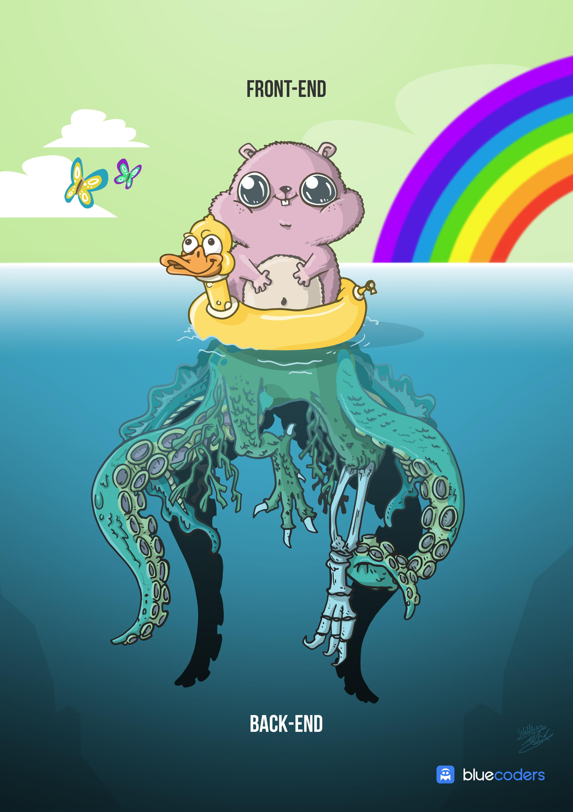

00. Link - Vulkan bindings for JavaScript
01. Link - JavaScript engine fundamentals: optimizing prototypes
02. Link - Fear, trust and JavaScript: When types and functional programming fail
03. Link - Five tips I wish I knew when I started with Typescript
04. Link - WorkerDOM: Concurrency for JavaScript programming with the DOM
05. Link - Web Payments Overview
06. Link - Unearthing ClojureScript for Front-end Development
07. Link - Goodbye JavaScript, Hello WebAssembly
08. Link - A Beginner's Guide to JavaScript's Prototype
09. Link - I Don’t Believe in Full-Stack Engineering
10. Link - Practical Mini-Projects in Node.js - Umar Hansa
